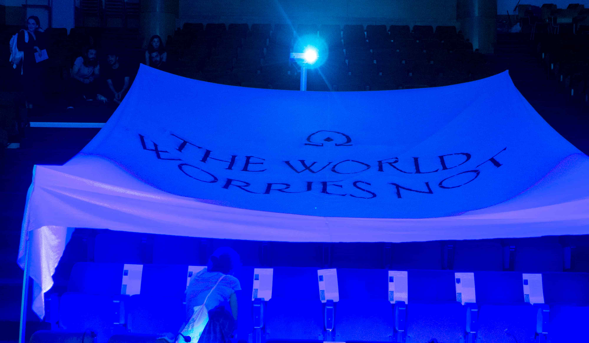
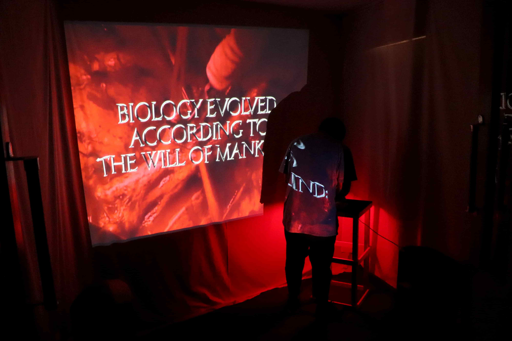
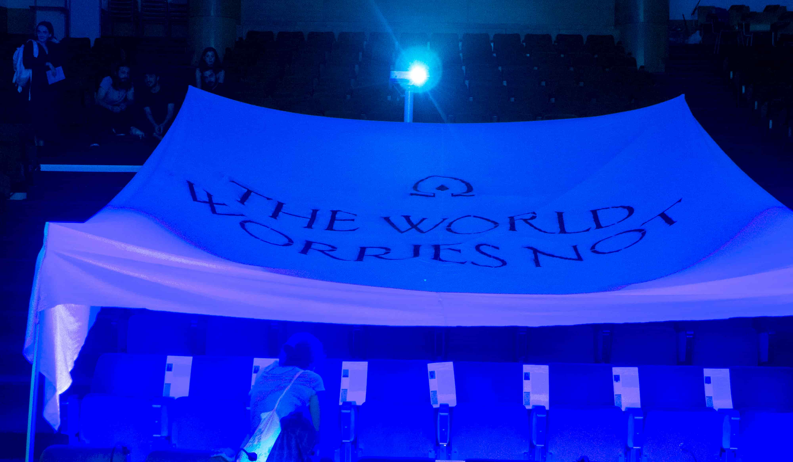
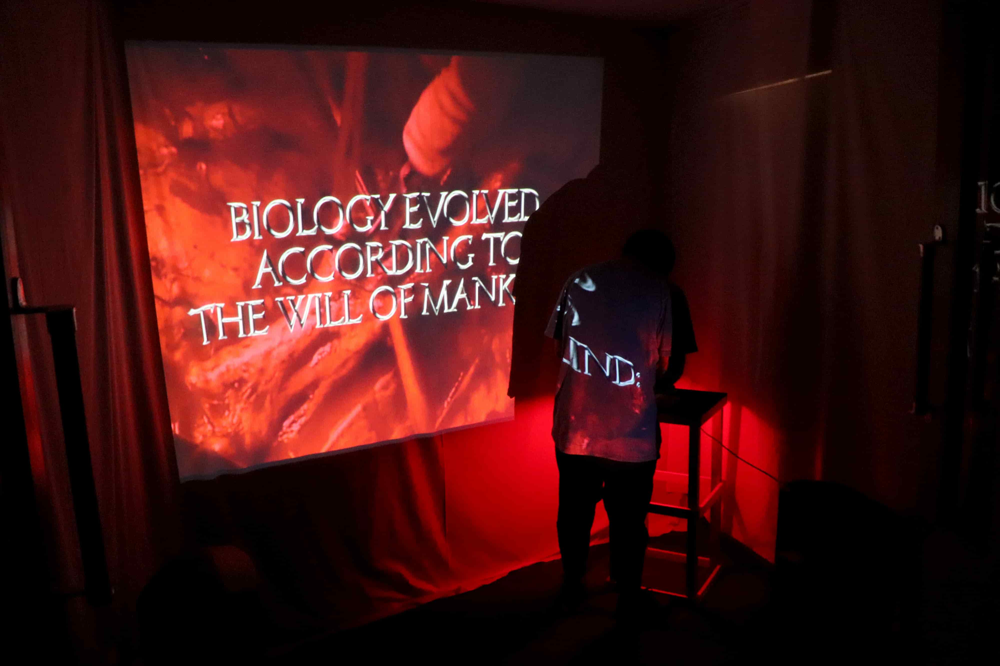

Towards the Omega Point (Trailer)
"Humanity Evolved to Collectivize Thought"
"The World Worries Not"


"The Global Bureau's Ultimate Compendium of Classified Knowledge" - Codex

Samples of the "Collective Safety Inquiries" displayed inside of the Project Room
 



"Towards the Omega Point" - Project Room
/ENG ONLY/
Towards the Omega Point speculates on a scenario where humankind evolved to collectivize thought. In this alternative reality, humanity has already surpassed the state of primal individualism: human beings consider the collective wellbeing and the ultimate goal of the species in every thought, action, movement and decision they make. The advancement of humanity is headed towards the Omega Point—a moment of convergence of every mind and every body.
In this society there’s no place for feelings like guilt, because guilt is a consequence of an individualistic behaviour: feeling like you’ve subjugated another human being, putting yourself above them, even if unconsciously. Those feelings are counterproductive to the advancement of humanity, this psychological evolution also altered human biology: individuals developed a negative feedback mechanism which, by generating pain, stops those feelings immediately. If it persists, this mechanism can lead to death. Each human is a unit. No one is unreplaceable. Would the world worry about you?
// Afonso Matos, Inês Pinheiro and Vitor Serra
_____
1. HUMANITY EVOLVED TO COLLECTIVIZE THOUGHT
The society of Towards the Omega Point evolved to collectivize thought. There’s no room for individualism here—every single human being thinks about the collective wellbeing at every moment of their lives, never once considering personal desires, needs or individualistic feelings such as guilt, envy, wrath or wrath. This is not a political imposition but rather the consequence of psychobiological evolution and natural selection: it’s genetically ingrained onto humankind’s genome. The world advances blissfully into a utopian future where all minds converge into a single, God-like being who can outlive the universe: that is the Omega Point, the ultimate state of consciousness. Every mind is connected because everyone thinks and behaves the same way: there are no insecurities, no flaws, no uncertainties. Society is embedded in a feeling of wholeness; humankind lives everyday in the holistic heaven of predictability, of productivity.
_____
2. WOULD THE WORLD WORRY ABOUT YOU?
This society was once an individualistic one, just like ours. However, a natural disaster—the supereruption of Mount Toba—plunged previous civilizations into an age of strife for survival. This event served as the environmental pressure which forced society to adapt from individualism to collectivism: the humans who carried the short (S) version of the gene that encoded for the transport of serotonin (who were the majority before Toba’s eruption) displayed individualistic behavior. Their society collapsed as they fought for resources. War and famine ravaged the world. Meanwhile, the humans who carried long (L) version of this same gene had their minds wired towards cooperation, altruism and collectivism. These humans fled the cities and managed to survive in the extreme weather conditions that followed the eruption. Their population grew in size and they were able to repopulate the world after hundreds of years. Society was restarted: now, a collective one — through generations of inbreeding, this collectivist gene spread out and mutated, becoming a stronger version of itself. The present day of this society is the year 9900 HE (Holocene Era, which started when Mount Toba erupted) and humankind behaves almost as a swarm-like organism with multiple units working towards the same end, Towards the Omega Point.